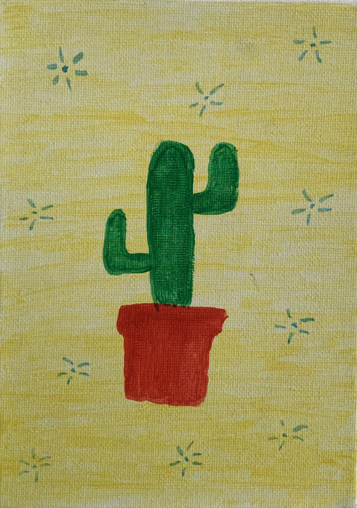

Ça pique
Waterverf op doek

.
'Ça pique' wordt momenteel geleend uit de privécollectie van magnetenverzamelaar Arvo Desloovere. Het oeuvre dat u hier ziet, leent zich tot een multitude aan interpretaties. Men speculeert dat Livia geÏnspireerd werd door een cadeau dat ze aan haar eerste liefde gaf, een cactus. Hoewel kunstwetenschappers hier nog sterk over discussiëren, zou het plantje een van de inspiratiebronnen kunnen zijn. Criticus Kyarah stelt de echte inspiratie in vraag. Een bron in Fretto’s dichte cirkel zou inzicht hebben gekregen in de zoekgeschiedenis op Livia’s laptop. Op die dag stonden meerdere curieuze zoekresultaten geregistreerd, zoals: 'Makkelijke tekeningen' en 'simpele tekening'.